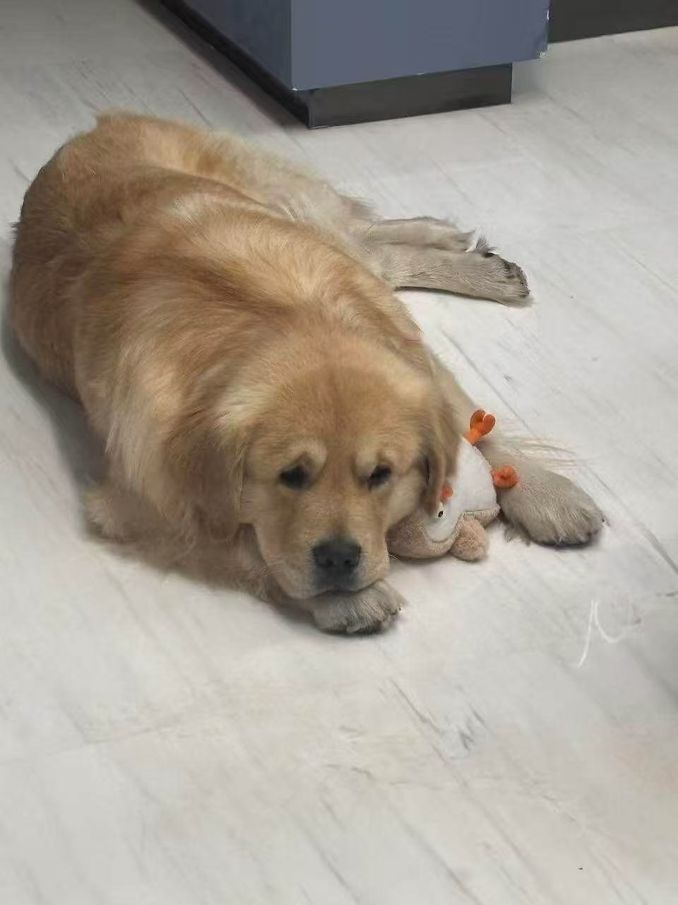
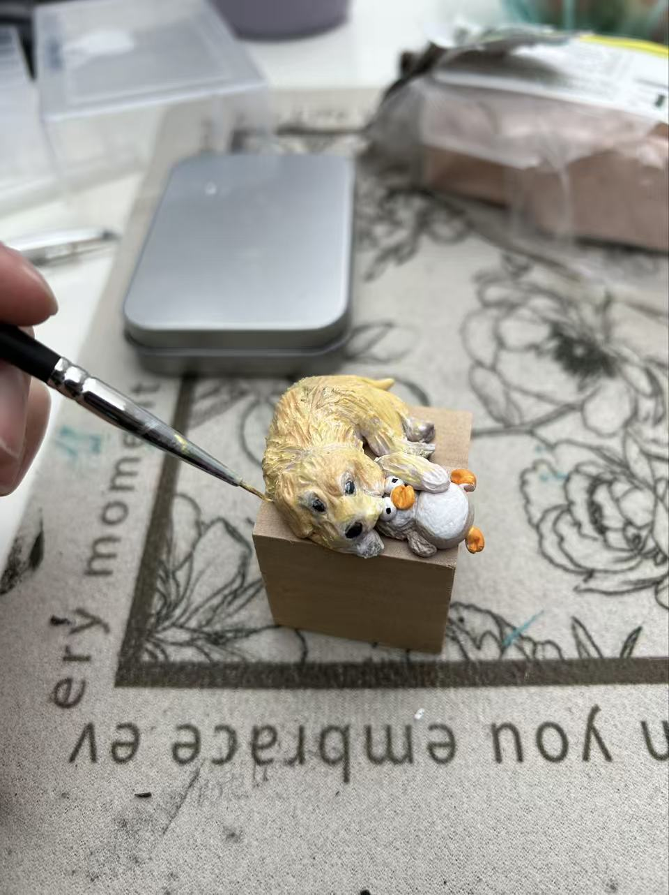

My background
Hi, I'm Rei Li, a rising senior studying Electrical Engineering at NYU Tandon School of Engineering. I grew up in China and came to New York for college.
Back home, I have two younger sisters and the most adorable golden retriever. My younger sister actually goes to NYU too, studying Mathematics and we're really close, which makes being away from home a little easier knowing we're at the same school.
My interests
Outside of engineering, I am completely obsessed with doll-making, especially BJD (ball-jointed dolls). There is something deeply satisfying about sculpting something from nothing and watching it slowly come to life.
More broadly, I love anything handmade. I work a lot with polymer clay and I've made countless little figurines of my golden retriever, and each one comes out slightly different, which I love. Crafting is my way to fully relax and just making something for the joy of it.
Someday I'd love to have my own studio.
Photos

